Data Visualisation Redesign
👨🎨 Visualisation Redesign
I have redesigned visuals which improved clarity, accessibility and enhanced storytelling impact. These first two examples were made publicly available and experienced enhanced social media interaction and visibility than their predecessors.
The third example was a personal project, as I attempted to delve into the data behind my personal HYROX performance.
Redesign Projects Include:
- 🏠 Example 1: Household Net Wealth
- 🏦 Example 2: Loan Interest Rates
- 🏃♂️ Example 3: Personal HYROX Data
🏠 Before Vs. After (Example 1: Household Net Wealth)
⮐ Before
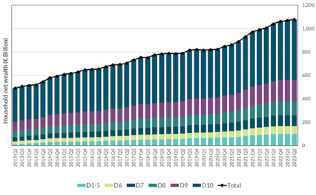
⮑ After
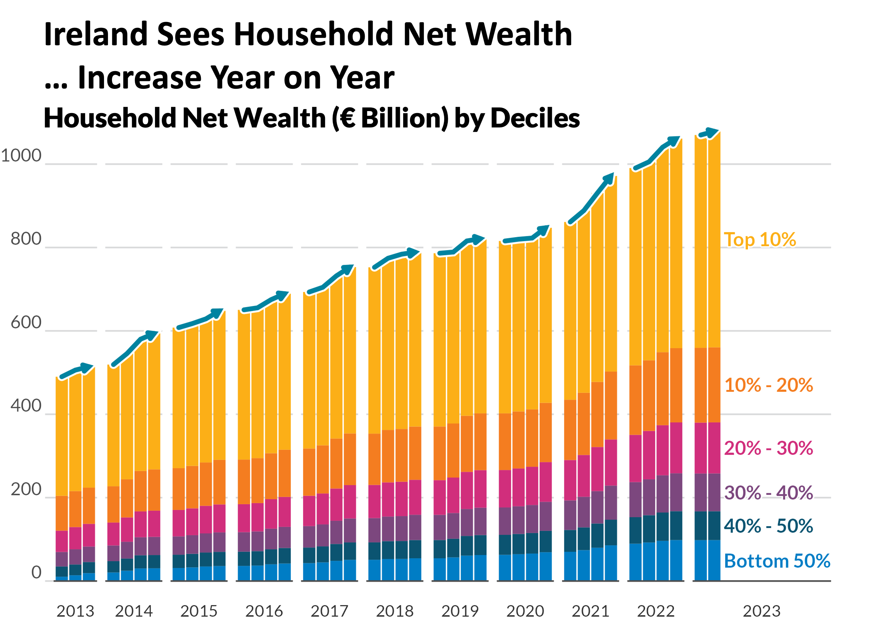
🗣️ Improvements Explained
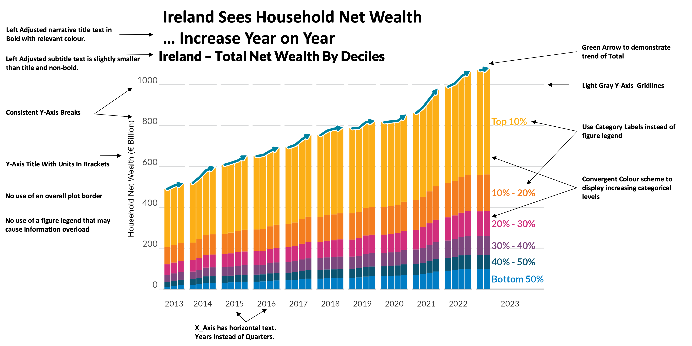
🏠 Before Vs. After (Example 2: Loan Interest Rates)
⮐ Before
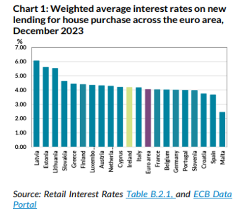
⮑ After
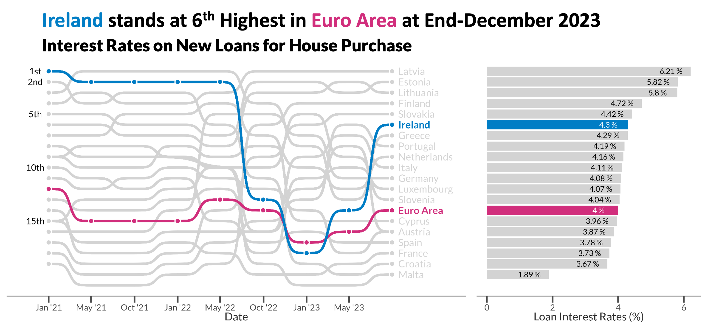
🗣️ Improvements Explained
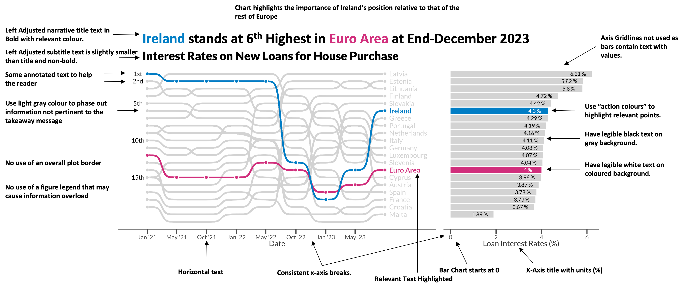
🏃♂️ Example 3: Personal HYROX Data
⮐ Before
Three separate charts describing HYROX Performance.
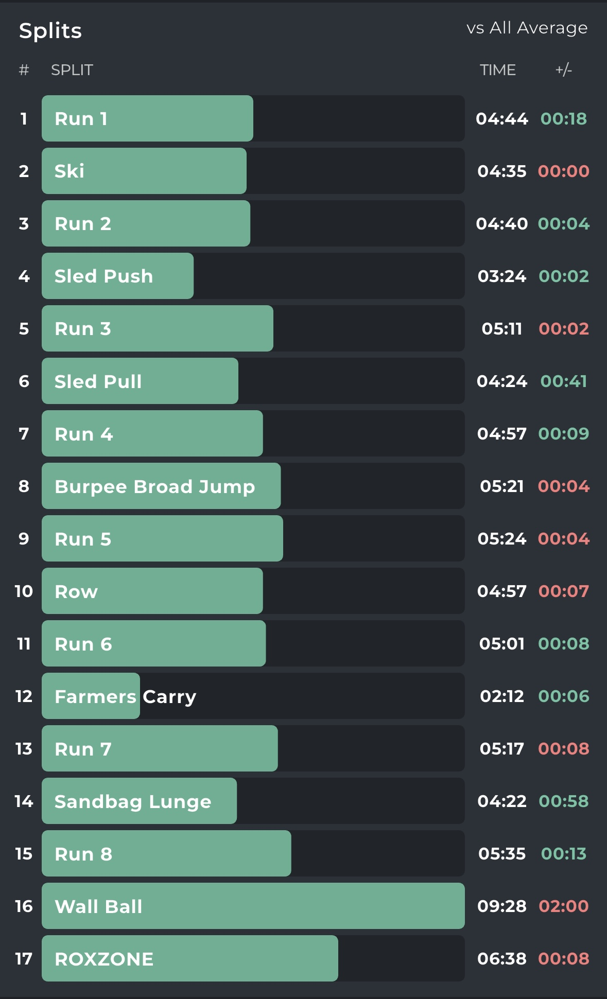
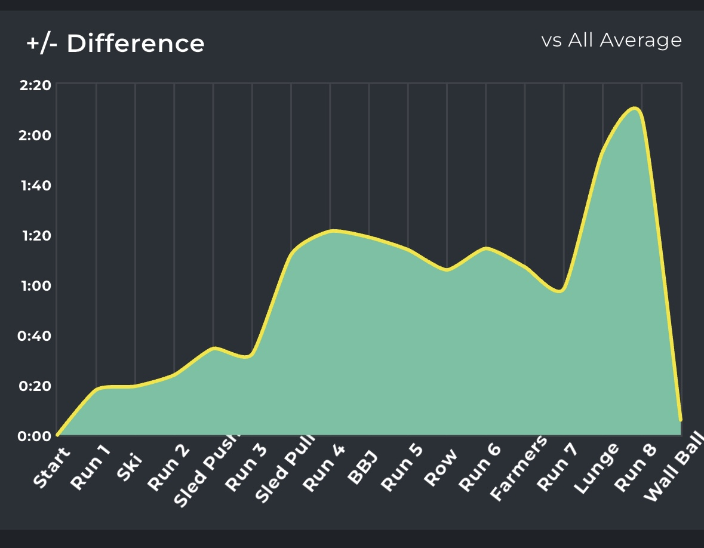
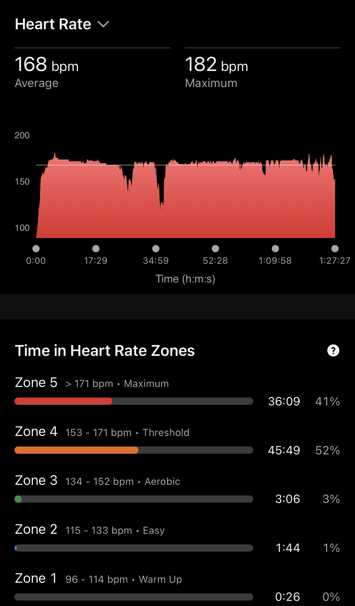
⮑ After
Combination of three separate charts into a clean, single graphic.
Click Image to enlarge 👇

🔨 Chart Redesign Process
1️⃣ Part 1: Pre-Chart Thinking
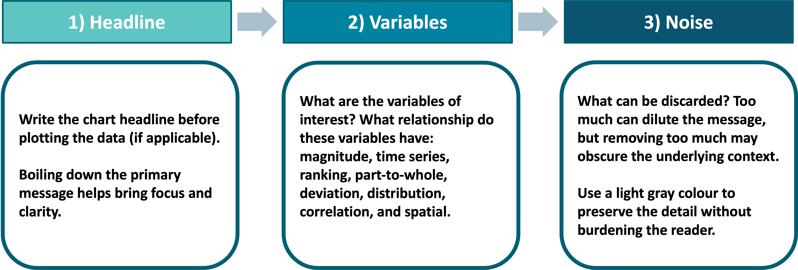
2️⃣ Part 2: Systematic Chart Redesign Template
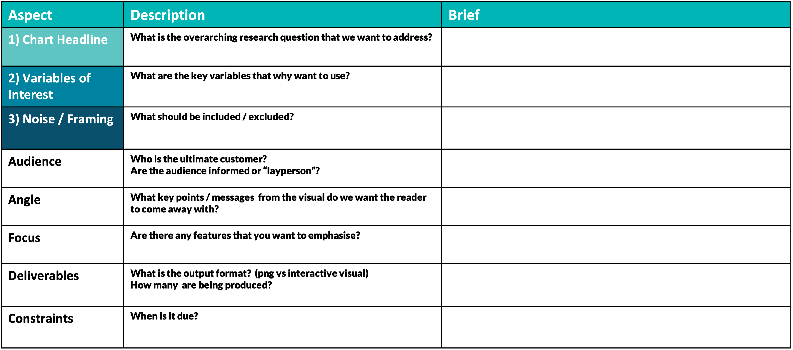
🎨 Data Visualization Style Guide Creation
In 2024, I created a Data Visualization Style Guide for the Central Bank of Ireland, developed in collaboration with the Communications department.
This guide formalised the institution’s approach to visual communication — ensuring that charts and dashboards across all departments followed a consistent, accessible, and design-informed standard.
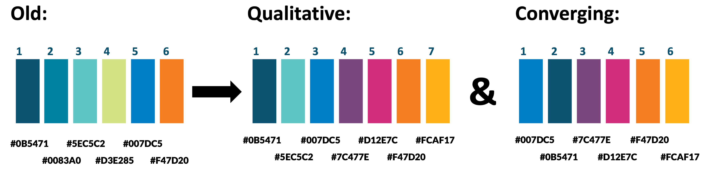
Purpose of the Guide:
- Establish color palettes aligned with accessibility and brand identity
- Promote best practices for labeling, annotation, and storytelling
- Standardise visual output across RShiny and publication workflows
The guide has since been implemented to elevate visual standards and ensure chart consistency across the organisation.
📄 View the Data Visualisation Style Guide (PDF)
🧑🏫 Teaching & Workshops
Alongside my redesign projects, I have designed and delivered numerous data visualisation workshops, ranging from 1-hour sessions to 3-hour deep dives, catering to both technical and non-technical audiences.
👨💻 Technical Workshops — ggplot2 and Data Visualisation in R
These sessions focus on developing hands-on skills using ggplot2 and the grammar of graphics framework.
Participants learn to:
- Build visuals layer by layer using R and ggplot2
- Customise color, theme, and layout for professional-quality outputs
- Apply design principles directly within R scripts
- Use reproducible workflows to standardize internal reporting visuals
Example sessions include:
- “From Data to Design: An Introduction to ggplot2”
🖌️ Non-Technical Workshops — Principles of Data Visualisation
These sessions focus on conceptual understanding and visual storytelling.
Topics include:
- The do’s and dont’s in data visualisation
- Research-based appraoches that lead to greater chart engagement
- Applying best practices to enable charts of greater clarity
Example sessions include:
- “Design Thinking for Analysts”
I have delivered these workshops within the Central Bank of Ireland where they have helped elevate in-house visualisation standards and design literacy.
💡 Key Takeaways
- Effective visualization = design + communication
- Redesigning a chart is about understanding audience perception and context, not just aesthetics
- Teaching others reinforces strong habits of clarity, simplicity, and storytelling in every visualisation
🏁 Summary
This section of my portfolio reflects not only my ability to create impactful visuals, but also to teach and empower others to do the same — helping teams communicate data more clearly, confidently, and creatively.